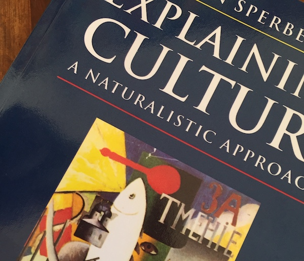

As I am finishing the work on the submission of a modelling paper about cultural attraction theory (the preprint, quite different from the current version, is here), I thought I could go back after a while to a darling of this blog. Writing down these few musings is mostly useful for me, but perhaps they can be interesting for the people that already know the diatribe - the post is hardly a crowd-pleaser.
First, my general position is more or less stable on what I wrote five (!) years ago together with Alex Mesoudi (here, even if I have a different opinion on many specific points) and, more recently, in the first half of the “Transmitting and sharing” chapter of my book. The points carried forward by cultural attraction theory are valuable and overlooked in much cultural evolution research, so it is important to pay attention to them. Convergent transformation can, as much as faithful copying, bring about cultural stability. Explaining the diffusion of a trait with culture - a tendency to copy others faithfully - is to assume what requires itself an explanation. We copy the majority, the successful, the elders: until we do not. Individual and social learning are not two different processes, and, yes, I now think that culture “is a property, not a thing”.
On the other side, hi-fi copying is important in some domains, and there is a limit to what convergent transformations can achieve. Cultural transmission does allow for the diffusion of new information that can not be reconstructed. Cultural attraction people are correct, technically, when they say that high-fidelity transmission is a special case of attraction, with reconstruction equal to zero, or something analogous. However, I believe that the advantages linked to the generality of a theory depend on what we are trying to explain.
My position is annoying as I guess I end up to slightly irritating both camps, but, despite what you heard on Twitter, academics are (mostly) a bunch of nice people, and I tend to be able to work with both the factions.
Second, I became more and more convinced that the main reason for the disagreement resides in the fact that different people ask different “deep” questions about culture. Thom Scott-Phillips says something similar here (at the end of section 2). Many cultural evolutionists are interested to explain what is so special in humans, and the answer is, correctly: culture, as they define it. Many cultural attractionists (?), instead, are interested to explain why some cultural traits are succesfull, given the state of the world and of its inhabitants. Again, I tend to share the latter interest but, of course, both questions are legitimate.
A similar way to put it is that many cultural attractionists are humanists (as in researchers working in the humanities) or social scientists that become frustrated with non-scientific explanations of culture, and pushed interdisciplinarity towards hard sciences. Many cultural evolutionists are instead natural scientists that “discovered” that culture is important to explain human and, up to a point, non-human behaviour, and pushed interdisciplinarity the other way around. This does not need to be literally true - people actually following the exact career path - but it seems to me it catches an interesting difference.
Third, and perhaps most controversial, cultural attraction theory stresses (recently with more emphasis) that factors of attraction are multifaceted and, in particular, not only cognitive. Again, for the internal consistency of the theory, this is perfectly right. Personally, I met cultural attraction theory (which was called, at the time, “epidemiology of representations”) reading Dan Sperber’s Explaining Culture, and this changed my scientific life (and, as a consequence, if I look at it from today’s perspective, my life tout-court). While the book is the classic source for the “factors of attraction can be psychological and ecological” motto, it is also home of chapters on culture and mental (massive) modularity, anthropology and psychology, etc. For me, at least, there was a clear message that pan-human cognitive similarities constrain the forms that cultures can take, and contribute to explaining them.
Independently on how these cognitive similarities are implemented and on how they arise, I still believe that cultural attraction theory is more interesting if this message is true, and I would not shy away from that. For reconstruction and convergent transformation to provide satisfying explanations, they should be reconducted to a coherent something else, whatever this will be. Of course, the importance of these constraints is variable and domain-dependent, so that in some cases we should prefer reconstruction-based explanations, and in others preservative-transmission-based explanations, but that is, I believe, a stimulating empirical problem for cultural evolutionists.